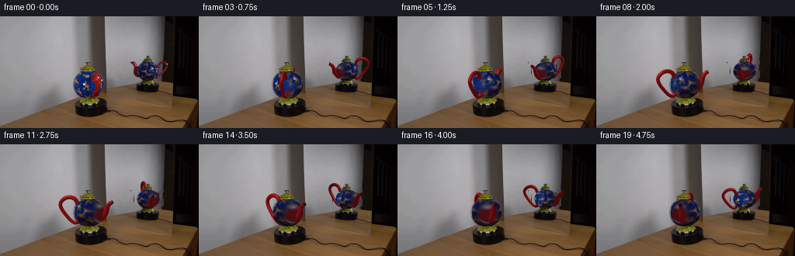
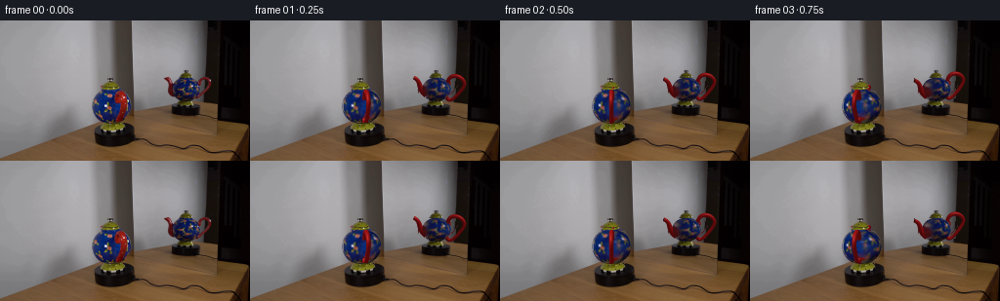
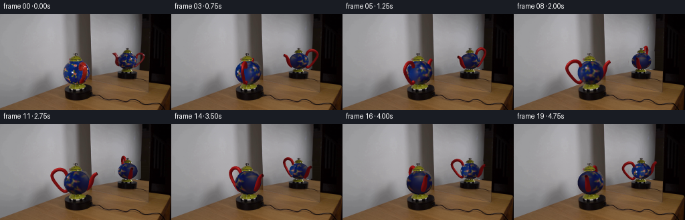
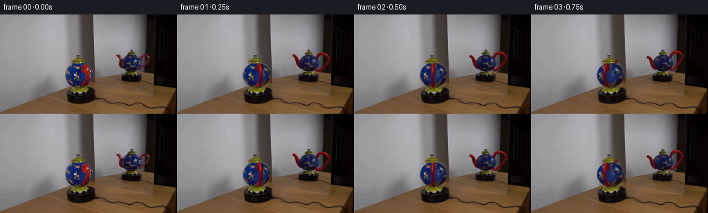

CODING AGENTS AS PIXEL WORLD MODELS
traex/GPT-6.1-Sol · 0122
点击播放 · 原生 RGB 像素
逐轮保存的候选
回放视频、检查图与代码变化。
每份候选均可单独播放。实际图片检查记录在下方工具轨迹中。
候选 01播放与检查图
点击播放 · 原生 RGB 像素


展开代码变化
--- 上一保存版本
+++ 本次保存版本
@@ -0,0 +1,260 @@
+from pathlib import Path
+import numpy as np
+from PIL import Image, ImageDraw
+import cv2
+from scipy.ndimage import map_coordinates, distance_transform_edt, gaussian_filter
+from scipy.interpolate import CubicSpline
+import artifact_io
+
+ROOT=Path(__file__).resolve().parent
+SOURCE=np.array(Image.open(ROOT/'first_frame.png').convert('RGB'))
+H,W=144,256
+SS=3
+Y,X=np.mgrid[:H*SS,:W*SS].astype(float)
+X=(X+.5)/SS-.5; Y=(Y+.5)/SS-.5
+
+# Two calibrated views of the same object. The mirror changes handedness,
+# rather than depicting an independently turning second teapot.
+VIEWS=[dict(cx=114.4,cy=87.5,rx=19.4,ry=18.0,e=.175,angle=0.,flip=1,sx=1.,sy=1.,handle_e=.175),
+ dict(cx=190.5,cy=70.15,rx=14.6,ry=12.2,e=.33,angle=1.642,flip=-1,sx=.755,sy=.79,handle_e=.33)]
+POLYS=[[(106,71),(121,71),(127,74),(131,79),(134,86),(134,94),(131,100),(126,103),(118,105),(109,104),(102,101),(98,97),(95,91),(95,84),(98,78),(102,74)],
+ [(182,59),(196,59),(200,62),(204,67),(205,74),(202,78),(197,81),(188,82),(182,80),(178,77),(176,72),(177,65),(180,61)]]
+
+def poly_mask(points):
+ a=Image.new('L',(W,H));ImageDraw.Draw(a).polygon(points,fill=255)
+ return np.array(a)>0
+
+# Remove only the old pot from the stationary scene; the turntable, wood,
+# mirror frame, lid and circular foot remain at their original positions.
+background=SOURCE.copy()
+removal=np.zeros((H,W),np.uint8)
+for p in POLYS:removal[poly_mask(p)]=255
+handle0=[(120,71),(127,72),(132,78),(135,89),(133,100),(127,105),(120,103),(122,94),(122,87),(116,83),(117,76)]
+spout1=[(168,58),(173,57),(178,63),(181,68),(181,77),(177,79),(173,75),(173,65)]
+handle1=[(202,60),(207,56),(213,57),(218,60),(220,66),(216,73),(210,79),(204,81),(201,79),(207,74),(213,67),(213,62),(210,61),(207,64)]
+for p in [handle0,spout1,handle1]:removal[poly_mask(p)]=255
+# Background reconstruction is horizontal, respecting the vertical frame.
+# The mirror also has a horizontal wall / table boundary behind the pot.
+for y in range(H):
+ for lo,hi in [(91,137),(164,221)]:
+ ids=np.where(removal[y,lo:hi]>0)[0]+lo
+ if not len(ids):continue
+ left=max(lo-3,int(ids.min())-3); right=min(hi,int(ids.max())+3)
+ if lo==91:
+ # Smooth wall gradient into the darker upright at the right.
+ colleft=np.median(SOURCE[max(0,y-1):y+2,left-2:left+1],axis=(0,1))
+ colright=np.median(SOURCE[max(0,y-1):y+2,135:137],axis=(0,1))
+ for x in ids:
+ f=(x-left)/(136-left)
+ background[y,x]=(colleft*(1-f)+colright*f).astype(np.uint8)
+ else:
+ if y<83:
+ # Sample the unobstructed reflected gray wall to the left.
+ l=np.mean(SOURCE[max(0,y-1):y+2,159:164],axis=(0,1))
+ # Its gray illumination falls towards the mirror's dark edge.
+ xx=np.arange(159,211)
+ # Learn falloff from the unobstructed row above the object.
+ ref=SOURCE[45,159:211].astype(float)
+ ratio=ref/(ref[0]+1e-5)
+ for x in ids:
+ if x<=210:background[y,x]=np.clip(l*ratio[x-159],0,255)
+ else:background[y,x]=SOURCE[y,221]
+ else:
+ for x in ids:background[y,x]=SOURCE[y,163]
+
+# Clean view textures: the red handle in the direct view is an occluder,
+# unlike the much smaller red blossoms painted on the cobalt body.
+textures=[]
+for i,(v,p) in enumerate(zip(VIEWS,POLYS)):
+ valid=poly_mask(p)
+ tex=SOURCE.copy()
+ if i==0:
+ occ=poly_mask(handle0).astype(np.uint8)*255
+ # Do not erase the separate small painted blossoms in the center.
+ tex=cv2.inpaint(tex,occ,4,cv2.INPAINT_TELEA)
+ # Inpainting can borrow the gray backdrop at the outer handle edge.
+ region=occ>0
+ good=valid&(~region)
+ _,inds=distance_transform_edt(~good,return_indices=True)
+ near=tex[inds[0],inds[1]]
+ bad=region&valid&((tex[:,:,2].astype(float)<tex[:,:,0]*1.1)|(tex[:,:,2]<tex[:,:,1]*1.4))
+ tex[bad]=near[bad]
+ else:
+ # The red pipe overlaps a few left boundary pixels.
+ occ=poly_mask(spout1)&valid
+ tex=cv2.inpaint(tex,occ.astype(np.uint8)*255,3,cv2.INPAINT_TELEA)
+ _,inds=distance_transform_edt(~valid,return_indices=True)
+ tex[~valid]=tex[inds[0][~valid],inds[1][~valid]]
+ textures.append(tex.astype(float))
+
+# Analytic surface coordinates of the rotationally symmetric glazed body.
+SURFACES=[]
+for v in VIEWS:
+ u=(X-v['cx'])/v['rx']*v['flip']; q=-(Y-v['cy'])/v['ry']
+ w=np.sqrt(np.maximum(0,1-u*u-q*q));mask=u*u+q*q<=1
+ e=v['e']; height=q*np.cos(e)+w*np.sin(e); z=-q*np.sin(e)+w*np.cos(e)
+ SURFACES.append((u,height,z,w,mask))
+
+
+def sample_body(viewindex,theta):
+ v=VIEWS[viewindex];u,h,z,w,mask=SURFACES[viewindex]
+ # A point in the current camera -> fixed material coordinates.
+ a=theta+v['angle']
+ wx=u*np.cos(a)+z*np.sin(a)
+ wz=-u*np.sin(a)+z*np.cos(a)
+ cols=[];weights=[]
+ for j,sv in enumerate(VIEWS):
+ d=sv['angle']
+ sx=wx*np.cos(d)-wz*np.sin(d)
+ sz=wx*np.sin(d)+wz*np.cos(d)
+ ey=sv['e']
+ sy=h*np.cos(ey)-sz*np.sin(ey)
+ dep=h*np.sin(ey)+sz*np.cos(ey)
+ px=sv['cx']+sv['rx']*sx*sv['flip'];py=sv['cy']-sv['ry']*sy
+ col=np.stack([map_coordinates(textures[j][:,:,k],[py,px],order=1,mode='nearest') for k in range(3)],-1)
+ weight=np.maximum(dep-.10,0)**4
+ # The reference's right edge has a red handle occluding its texture.
+ if j==0:
+ handle_occlusion=(px>118)&(py>71)&(py<105)
+ weight*=np.where(handle_occlusion,.25,1.)
+ cols.append(col);weights.append(weight)
+ denom=weights[0]+weights[1]
+ result=(cols[0]*weights[0][...,None]+cols[1]*weights[1][...,None])/(denom[...,None]+1e-9)
+ missing=denom<.002
+ if np.any(missing):
+ # Continue the observed ceramic ornamentation around the back.
+ # Reflection of the nearest observed hemisphere avoids gray holes.
+ sv=VIEWS[1]; d=sv['angle'];sx=wx*np.cos(d)-wz*np.sin(d);sz=wx*np.sin(d)+wz*np.cos(d)
+ sz=np.abs(sz)
+ sy=h*np.cos(sv['e'])-sz*np.sin(sv['e'])
+ px=sv['cx']+sv['rx']*sx*sv['flip'];py=sv['cy']-sv['ry']*sy
+ fill=np.stack([map_coordinates(textures[1][:,:,k],[py,px],order=1,mode='nearest') for k in range(3)],-1)
+ result[missing]=fill[missing]
+ # Soft stationary studio lighting on the glazed surface.
+ # The input's texture already includes its low-contrast base illumination.
+ light=.85+.15*w
+ result*=light[...,None]
+ return result,mask
+
+
+def tube(path,radii,sides=18,steps=76,cap=True):
+ path=np.asarray(path,float)
+ tt=np.r_[0,np.cumsum(np.sqrt(np.sum(np.diff(path,axis=0)**2,axis=1)))];tt/=tt[-1]
+ ts=np.linspace(0,1,steps)
+ spline=CubicSpline(tt,path,axis=0,bc_type='natural')
+ pts=spline(ts);tangent=spline(ts,1);tangent/=np.linalg.norm(tangent,axis=1)[:,None]
+ rad=np.interp(ts,tt,radii)
+ base=np.tile([0.,0.,1.],(steps,1));normal=np.cross(tangent,base);normal/=np.linalg.norm(normal,axis=1)[:,None]
+ aa=np.arange(sides)*2*np.pi/sides
+ normals=normal[:,None,:]*np.cos(aa)[None,:,None]+base[:,None,:]*np.sin(aa)[None,:,None]
+ verts=pts[:,None,:]+normals*rad[:,None,None]
+ tri=[]
+ for j in range(steps-1):
+ for k in range(sides):
+ a=j*sides+k;b=j*sides+(k+1)%sides;c=(j+1)*sides+k;d=(j+1)*sides+(k+1)%sides
+ tri.extend([(a,b,c),(b,d,c)])
+ if cap:
+ for k in range(1,sides-1):tri.append(((steps-1)*sides,(steps-1)*sides+k,(steps-1)*sides+k+1))
+ return verts.reshape(-1,3),normals.reshape(-1,3),np.array(tri),rad
+
+HANDLE=tube([(15,28,0),(19,35,0),(27,37,0),(34,34,0),(38,28,0),(36,21,0),(30,13,0),(23,6,0),(17,4,0),(14,7,0)], [2.5,2.6,2.6,2.5,2.35,2.3,2.2,2.1,2.3,2.7])
+SPOUT=tube([(-14,10,0),(-20,16,0),(-23,23,0),(-25,28,0),(-29,32,0),(-31,33,0)],[4.4,4.,3.4,2.8,2.5,2.5],steps=52,cap=False)
+
+
+def project_mesh(mesh,viewindex,theta):
+ verts,norms,tris,rad=mesh;v=VIEWS[viewindex]
+ angle=1.2+theta+v['angle']; c=np.cos(angle);s=np.sin(angle)
+ xx=verts[:,0]*c-verts[:,2]*s;zz=verts[:,0]*s+verts[:,2]*c; hh=verts[:,1]-18
+ nx=norms[:,0]*c-norms[:,2]*s;nz=norms[:,0]*s+norms[:,2]*c;ny=norms[:,1]
+ e=v['handle_e'];ce=np.cos(e);se=np.sin(e)
+ px=v['cx']+v['flip']*v['sx']*xx;py=v['cy']+v['sy']*(-hh*ce+zz*se);dep=hh*se+zz*ce
+ normals=np.stack([nx,ny*ce-nz*se,ny*se+nz*ce],1)
+ # Broad white softbox highlights on smooth, dark red enamel.
+ light=np.array([-.45,.75,.48]);light/=np.linalg.norm(light)
+ diff=np.maximum(0,normals@light)
+ half=light+np.array([0,0,1]);half/=np.linalg.norm(half)
+ spec=np.maximum(0,normals@half)**25
+ color=np.stack([81+79*diff+57*spec,8+13*diff+43*spec,10+12*diff+37*spec],1)
+ if viewindex:color*=.91
+ return np.stack([(px+.5)*SS-.5,(py+.5)*SS-.5,dep],1),color,tris
+
+
+def raster(out,depth,verts,colors,tris,clip):
+ # Local barycentric rasterizer. No rendering engine is used.
+ hh,ww=depth.shape
+ for tr in tris:
+ p=verts[tr];rgb=colors[tr]
+ x0=max(0,int(np.floor(p[:,0].min())));x1=min(ww-1,int(np.ceil(p[:,0].max())))
+ y0=max(0,int(np.floor(p[:,1].min())));y1=min(hh-1,int(np.ceil(p[:,1].max())))
+ if x0>x1 or y0>y1:continue
+ den=(p[1,1]-p[2,1])*(p[0,0]-p[2,0])+(p[2,0]-p[1,0])*(p[0,1]-p[2,1])
+ if abs(den)<1e-9:continue
+ yy,xx=np.mgrid[y0:y1+1,x0:x1+1]
+ a=((p[1,1]-p[2,1])*(xx-p[2,0])+(p[2,0]-p[1,0])*(yy-p[2,1]))/den
+ b=((p[2,1]-p[0,1])*(xx-p[2,0])+(p[0,0]-p[2,0])*(yy-p[2,1]))/den
+ c=1-a-b
+ d=a*p[0,2]+b*p[1,2]+c*p[2,2]
+ reg=depth[y0:y1+1,x0:x1+1]
+ take=(a>=-.00001)&(b>=-.00001)&(c>=-.00001)&(d>reg)&clip[y0:y1+1,x0:x1+1]
+ if not np.any(take):continue
+ col=a[...,None]*rgb[0]+b[...,None]*rgb[1]+c[...,None]*rgb[2]
+ out[y0:y1+1,x0:x1+1][take]=col[take];reg[take]=d[take]
+
+
+def generate():
+ frames=[SOURCE.copy()]
+ stationary=np.repeat(np.repeat(background,SS,0),SS,1).astype(float)
+ for fi in range(1,20):
+ theta=fi/4*(2*np.pi/8)
+ out=stationary.copy()
+ for vi,v in enumerate(VIEWS):
+ col,mask=sample_body(vi,theta)
+ clip=np.ones((H*SS,W*SS),bool)
+ if vi:clip&=(X>137)&(X<222)&(Y<87)
+ else:clip&=(Y<115)
+ mask&=clip
+ out[mask]=col[mask]
+ u,h,z,w,_=SURFACES[vi]
+ depth=np.full((H*SS,W*SS),-1e6)
+ depth[mask]=19*w[mask]
+ for mesh in [HANDLE,SPOUT]:
+ vv,cc,tt=project_mesh(mesh,vi,theta)
+ raster(out,depth,vv,cc,tt,clip)
+ # Dark hollow mouth and red lip, both built as a small end ring.
+ p,n,t,r=SPOUT
+ sides=18; last=p[-sides:]; normals=n[-sides:]
+ center=last.mean(axis=0)
+ inner=center+(last-center)*.69
+ ring=np.concatenate([last,inner,center[None]],axis=0)
+ norm=np.concatenate([normals,normals,np.array([[0.,1.,0.]])])
+ tr=[]
+ for k in range(sides):
+ j=(k+1)%sides
+ tr.extend([(k,j,k+sides),(j,j+sides,k+sides),(2*sides,k+sides,j+sides)])
+ mesh=(ring,norm,np.array(tr),np.zeros(len(ring)))
+ vv,cc,tt=project_mesh(mesh,vi,theta)
+ cc[sides:]=[34,7,9]
+ raster(out,depth,vv,cc,tt,clip)
+ # Axisymmetric lid and the yellow glazed foot retain the photographic
+ # appearance, with no sliding or change to their position on the base.
+ for box in [(102,58,123,71),(103,105,127,113),(183,50,199,59),(181,83,196,88)]:
+ x0,y0,x1,y1=box
+ patch=SOURCE[y0:y1,x0:x1].astype(int)
+ yellow=(patch[:,:,0]>patch[:,:,2]*1.8)&(patch[:,:,1]>patch[:,:,2]*1.9)&(patch[:,:,1]>38)
+ if y0<60:
+ # Include the neutral lid finial, but not nearby background.
+ cx=113.5 if x0<150 else 191
+ yy,xx=np.mgrid[y0:y1,x0:x1]
+ yellow|=((xx-cx)**2/3.8**2+(yy-(60.3 if x0<150 else 52))**2/2.3**2<1)
+ m=np.repeat(np.repeat(yellow,SS,0),SS,1)
+ region=out[y0*SS:y1*SS,x0*SS:x1*SS]
+ original=np.repeat(np.repeat(SOURCE[y0:y1,x0:x1],SS,0),SS,1)
+ region[m]=original[m]
+ frame=np.clip(out.reshape(H,SS,W,SS,3).mean((1,3)),0,255).round().astype(np.uint8)
+ frames.append(frame)
+ print('frame',fi,flush=True)
+ return np.stack(frames)
+
+if __name__=='__main__':
+ result=generate()
+ artifact_io.save(result,ROOT)
候选 02播放与检查图
点击播放 · 原生 RGB 像素


展开代码变化
--- 上一保存版本
+++ 本次保存版本
@@ -32,9 +32,10 @@
handle0=[(120,71),(127,72),(132,78),(135,89),(133,100),(127,105),(120,103),(122,94),(122,87),(116,83),(117,76)]
spout1=[(168,58),(173,57),(178,63),(181,68),(181,77),(177,79),(173,75),(173,65)]
handle1=[(202,60),(207,56),(213,57),(218,60),(220,66),(216,73),(210,79),(204,81),(201,79),(207,74),(213,67),(213,62),(210,61),(207,64)]
-for p in [handle0,spout1,handle1]:removal[poly_mask(p)]=255
+for p in [handle0,spout1,handle1,[(204,57),(215,57),(221,63),(220,70),(214,79),(204,82)]]:removal[poly_mask(p)]=255
# Background reconstruction is horizontal, respecting the vertical frame.
# The mirror also has a horizontal wall / table boundary behind the pot.
+removal=cv2.dilate(removal,np.ones((3,3),np.uint8))
for y in range(H):
for lo,hi in [(91,137),(164,221)]:
ids=np.where(removal[y,lo:hi]>0)[0]+lo
@@ -68,21 +69,29 @@
for i,(v,p) in enumerate(zip(VIEWS,POLYS)):
valid=poly_mask(p)
tex=SOURCE.copy()
+ # Isolate the long connected red hardware, but retain the isolated
+ # red flowerheads that are actually part of the painted decoration.
+ r,g,b=SOURCE.transpose(2,0,1).astype(float)
+ red=(r>g*1.45)&(r>b*1.30)&(r>34)&valid
+ nn,lab,stats,cen=cv2.connectedComponentsWithStats(red.astype(np.uint8),8)
+ occ=np.zeros((H,W),np.uint8)
+ for label in range(1,nn):
+ if stats[label,cv2.CC_STAT_AREA]>28:
+ occ[lab==label]=255
if i==0:
- occ=poly_mask(handle0).astype(np.uint8)*255
- # Do not erase the separate small painted blossoms in the center.
- tex=cv2.inpaint(tex,occ,4,cv2.INPAINT_TELEA)
- # Inpainting can borrow the gray backdrop at the outer handle edge.
- region=occ>0
- good=valid&(~region)
- _,inds=distance_transform_edt(~good,return_indices=True)
- near=tex[inds[0],inds[1]]
- bad=region&valid&((tex[:,:,2].astype(float)<tex[:,:,0]*1.1)|(tex[:,:,2]<tex[:,:,1]*1.4))
- tex[bad]=near[bad]
+ occ[72:85,118:133]=255
+ occ[85:103,121:134]=255
else:
- # The red pipe overlaps a few left boundary pixels.
- occ=poly_mask(spout1)&valid
- tex=cv2.inpaint(tex,occ.astype(np.uint8)*255,3,cv2.INPAINT_TELEA)
+ occ[62:78,175:179]=255
+ occ[61:79,203:206]=255
+ occ=cv2.dilate(occ,np.ones((3,3),np.uint8))
+ # Extend the body before filling; no wall or frame gray can contaminate
+ # the ceramic repairs when the old red pipe is removed.
+ good=valid & (occ==0)
+ _,inds=distance_transform_edt(~good,return_indices=True)
+ tex[~good]=tex[inds[0][~good],inds[1][~good]]
+ tex=cv2.inpaint(tex,occ,5,cv2.INPAINT_TELEA)
+ # Extend the repaired hemisphere smoothly to texture map boundaries.
_,inds=distance_transform_edt(~valid,return_indices=True)
tex[~valid]=tex[inds[0][~valid],inds[1][~valid]]
textures.append(tex.astype(float))
可观测工具轨迹
实际执行的命令与返回图片。
命令 1exit 0
/bin/bash -lc "ls -la && cat prompt.txt && printf '\\n---RULES---\\n' && cat GENERATION_RULES.md"
命令 2exit 0
/bin/bash -lc "cat artifact_io.py && python - <<'PY'
from PIL import Image
import numpy as np
im=np.array(Image.open('first_frame.png'))
print(im.shape)
# coarse quantized colors and luminance ascii
r=np.array(Image.open('first_frame.png').resize((128,72)))
chars=' .:-=+*#%@'
y=r.mean(2)
for row in y: print(''.join(chars[min(9,int(v/256*10))] for v in row))
PY"命令 3exit 0
/bin/bash -lc "python - <<'PY'
from PIL import Image
import numpy as np
im=np.array(Image.open('first_frame.png'))
for name,box in [('object',(85,48,143,131)),('reflection',(155,40,226,105))]:
a=im[box[1]:box[3],box[0]:box[2]];print(name,box)
lum=a.mean(2);ch=' .,:;ox%#@'
for row in lum: print(''.join(ch[min(9,int(v/256*10))] for v in row))
print('samples')
for y in [0,20,40,50,60,70,80,90,100,110,120,130,143]:
print(y,[(x,tuple(im[y,x])) for x in [0,50,85,95,105,115,125,135,140,150,160,180,200,215,225,235,255]])
PY"命令 4exit 0
/bin/bash -lc "python - <<'PY'
from PIL import Image
import numpy as np, colorsys
im=np.array(Image.open('first_frame.png'))
for box in [(89,55,140,119),(165,48,222,99)]:
print(box,'columns tens',''.join(str(x//10%10) for x in range(box[0],box[2])));print('units',''.join(str(x%10) for x in range(box[0],box[2])))
for y in range(box[1],box[3]):
s=''
for x in range(box[0],box[2]):
r,g,b=map(int,im[y,x]);h,sat,v=colorsys.rgb_to_hsv(r/255,g/255,b/255)
if max(r,g,b)<28: c='.'
elif sat<.23:c='+' if v>.4 else ':'
else: c='R' if h<.065 or h>.96 else 'O' if h<.15 else 'Y' if h<.21 else 'G' if h<.45 else 'C' if h<.55 else 'B' if h<.74 else 'P' if h<.85 else 'r'
s+=c
print('%3d'%y,s)
PY"命令 5exit 0
/bin/bash -lc "python - <<'PY'
import numpy as np
from PIL import Image
im=np.array(Image.open('first_frame.png'))
for box in [(92,70,135,106),(165,56,220,83)]:
a=im[box[1]:box[3],box[0]:box[2]].astype(int)
red=(a[:,:,0]>a[:,:,1]*1.4)&(a[:,:,0]>a[:,:,2]*1.25)&(a[:,:,0]>35)
print('red',box)
for j,row in enumerate(red):print(j+box[1],''.join('R' if v else ' ' for v in row))
PY"命令 6exit 0
/bin/bash -lc "python - <<'PY' import importlib.util for x in ['numpy','scipy','cv2','numba']: print(x, bool(importlib.util.find_spec(x))) PY"
命令 7exit 0
/bin/bash -lc "cat > generate.py <<'PY'
from pathlib import Path
import numpy as np
from PIL import Image, ImageDraw
import cv2
from scipy.ndimage import map_coordinates, distance_transform_edt, gaussian_filter
from scipy.interpolate import CubicSpline
import artifact_io
ROOT=Path(__file__).resolve().parent
SOURCE=np.array(Image.open(ROOT/'first_frame.png').convert('RGB'))
H,W=144,256
SS=3
Y,X=np.mgrid[:H*SS,:W*SS].astype(float)
X=(X+.5)/SS-.5; Y=(Y+.5)/SS-.5
# Two calibrated views of the same object. The mirror changes handedness,
# rather than depicting an independently turning second teapot.
VIEWS=[dict(cx=114.4,cy=87.5,rx=19.4,ry=18.0,e=.175,angle=0.,flip=1,sx=1.,sy=1.,handle_e=.175),
dict(cx=190.5,cy=70.15,rx=14.6,ry=12.2,e=.33,angle=1.642,flip=-1,sx=.755,sy=.79,handle_e=.33)]
POLYS=[[(106,71),(121,71),(127,74),(131,79),(134,86),(134,94),(131,100),(126,103),(118,105),(109,104),(102,101),(98,97),(95,91),(95,84),(98,78),(102,74)],
[(182,59),(196,59),(200,62),(204,67),(205,74),(202,78),(197,81),(188,82),(182,80),(178,77),(176,72),(177,65),(180,61)]]
def poly_mask(points):
a=Image.new('L',(W,H));ImageDraw.Draw(a).polygon(points,fill=255)
return np.array(a)>0
# Remove only the old pot from the stationary scene; the turntable, wood,
# mirror frame, lid and circular foot remain at their original positions.
background=SOURCE.copy()
removal=np.zeros((H,W),np.uint8)
for p in POLYS:removal[poly_mask(p)]=255
handle0=[(120,71),(127,72),(132,78),(135,89),(133,100),(127,105),(120,103),(122,94),(122,87),(116,83),(117,76)]
spout1=[(168,58),(173,57),(178,63),(181,68),(181,77),(177,79),(173,75),(173,65)]
handle1=[(202,60),(207,56),(213,57),(218,60),(220,66),(216,73),(210,79),(204,81),(201,79),(207,74),(213,67),(213,62),(210,61),(207,64)]
for p in [handle0,spout1,handle1]:removal[poly_mask(p)]=255
# Background reconstruction is horizontal, respecting the vertical frame.
# The mirror also has a horizontal wall / table boundary behind the pot.
for y in range(H):
for lo,hi in [(91,137),(164,221)]:
ids=np.where(removal[y,lo:hi]>0)[0]+lo
if not len(ids):continue
left=max(lo-3,int(ids.min())-3); right=min(hi,int(ids.max())+3)
if lo==91:
# Smooth wall gradient into the darker upright at the right.
colleft=np.median(SOURCE[max(0,y-1):y+2,left-2:left+1],axis=(0,1))
colright=np.median(SOURCE[max(0,y-1):y+2,135:137],axis=(0,1))
for x in ids:
f=(x-left)/(136-left)
background[y,x]=(colleft*(1-f)+colright*f).astype(np.uint8)
else:
if y<83:
# Sample the unobstructed reflected gray wall to the left.
l=np.mean(SOURCE[max(0,y-1):y+2,159:164],axis=(0,1))
# Its gray illumination falls towards the mirror's dark edge.
xx=np.arange(159,211)
# Learn falloff from the unobstructed row above the object.
ref=SOURCE[45,159:211].astype(float)
ratio=ref/(ref[0]+1e-5)
for x in ids:
if x<=210:background[y,x]=np.clip(l*ratio[x-159],0,255)
else:background[y,x]=SOURCE[y,221]
else:
for x in ids:background[y,x]=SOURCE[y,163]
# Clean view textures: the red handle in the direct view is an occluder,
# unlike the much smaller red blossoms painted on the cobalt body.
textures=[]
for i,(v,p) in enumerate(zip(VIEWS,POLYS)):
valid=poly_mask(p)
tex=SOURCE.copy()
if i==0:
occ=poly_mask(handle0).astype(np.uint8)*255
# Do not erase the separate small painted blossoms in the center.
tex=cv2.inpaint(tex,occ,4,cv2.INPAINT_TELEA)
# Inpainting can borrow the gray backdrop at the outer handle edge.
region=occ>0
good=valid&(~region)
_,inds=distance_transform_edt(~good,return_indices=True)
near=tex[inds[0],inds[1]]
bad=region&valid&((tex[:,:,2].astype(float)<tex[:,:,0]*1.1)|(tex[:,:,2]<tex[:,:,1]*1.4))
tex[bad]=near[bad]
else:
# The red pipe overlaps a few left boundary pixels.
occ=poly_mask(spout1)&valid
tex=cv2.inpaint(tex,occ.astype(np.uint8)*255,3,cv2.INPAINT_TELEA)
_,inds=distance_transform_edt(~valid,return_indices=True)
tex[~valid]=tex[inds[0][~valid],inds[1][~valid]]
textures.append(tex.astype(float))
# Analytic surface coordinates of the rotationally symmetric glazed body.
SURFACES=[]
for v in VIEWS:
u=(X-v['cx'])/v['rx']*v['flip']; q=-(Y-v['cy'])/v['ry']
w=np.sqrt(np.maximum(0,1-u*u-q*q));mask=u*u+q*q<=1
e=v['e']; height=q*np.cos(e)+w*np.sin(e); z=-q*np.sin(e)+w*np.cos(e)
SURFACES.append((u,height,z,w,mask))
def sample_body(viewindex,theta):
v=VIEWS[viewindex];u,h,z,w,mask=SURFACES[viewindex]
# A point in the current camera -> fixed material coordinates.
a=theta+v['angle']
wx=u*np.cos(a)+z*np.sin(a)
wz=-u*np.sin(a)+z*np.cos(a)
cols=[];weights=[]
for j,sv in enumerate(VIEWS):
d=sv['angle']
sx=wx*np.cos(d)-wz*np.sin(d)
sz=wx*np.sin(d)+wz*np.cos(d)
ey=sv['e']
sy=h*np.cos(ey)-sz*np.sin(ey)
dep=h*np.sin(ey)+sz*np.cos(ey)
px=sv['cx']+sv['rx']*sx*sv['flip'];py=sv['cy']-sv['ry']*sy
col=np.stack([map_coordinates(textures[j][:,:,k],[py,px],order=1,mode='nearest') for k in range(3)],-1)
weight=np.maximum(dep-.10,0)**4
# The reference's right edge has a red handle occluding its texture.
if j==0:
handle_occlusion=(px>118)&(py>71)&(py<105)
weight*=np.where(handle_occlusion,.25,1.)
cols.append(col);weights.append(weight)
denom=weights[0]+weights[1]
result=(cols[0]*weights[0][...,None]+cols[1]*weights[1][...,None])/(denom[...,None]+1e-9)
missing=denom<.002
if np.any(missing):
# Continue the observed ceramic ornamentation around the back.
# Reflection of the nearest observed hemisphere avoids gray holes.
sv=VIEWS[1]; d=sv['angle'];sx=wx*np.cos(d)-wz*np.sin(d);sz=wx*np.sin(d)+wz*np.cos(d)
sz=np.abs(sz)
sy=h*np.cos(sv['e'])-sz*np.sin(sv['e'])
px=sv['cx']+sv['rx']*sx*sv['flip'];py=sv['cy']-sv['ry']*sy
fill=np.stack([map_coordinates(textures[1][:,:,k],[py,px],order=1,mode='nearest') for k in range(3)],-1)
result[missing]=fill[missing]
# Soft stationary studio lighting on the glazed surface.
# The input's texture already includes its low-contrast base illumination.
light=.85+.15*w
result*=light[...,None]
return result,mask
def tube(path,radii,sides=18,steps=76,cap=True):
path=np.asarray(path,float)
tt=np.r_[0,np.cumsum(np.sqrt(np.sum(np.diff(path,axis=0)**2,axis=1)))];tt/=tt[-1]
ts=np.linspace(0,1,steps)
spline=CubicSpline(tt,path,axis=0,bc_type='natural')
pts=spline(ts);tangent=spline(ts,1);tangent/=np.linalg.norm(tangent,axis=1)[:,None]
rad=np.interp(ts,tt,radii)
base=np.tile([0.,0.,1.],(steps,1));normal=np.cross(tangent,base);normal/=np.linalg.norm(normal,axis=1)[:,None]
aa=np.arange(sides)*2*np.pi/sides
normals=normal[:,None,:]*np.cos(aa)[None,:,None]+base[:,None,:]*np.sin(aa)[None,:,None]
verts=pts[:,None,:]+normals*rad[:,None,None]
tri=[]
for j in range(steps-1):
for k in range(sides):
a=j*sides+k;b=j*sides+(k+1)%sides;c=(j+1)*sides+k;d=(j+1)*sides+(k+1)%sides
tri.extend([(a,b,c),(b,d,c)])
if cap:
for k in range(1,sides-1):tri.append(((steps-1)*sides,(steps-1)*sides+k,(steps-1)*sides+k+1))
return verts.reshape(-1,3),normals.reshape(-1,3),np.array(tri),rad
HANDLE=tube([(15,28,0),(19,35,0),(27,37,0),(34,34,0),(38,28,0),(36,21,0),(30,13,0),(23,6,0),(17,4,0),(14,7,0)], [2.5,2.6,2.6,2.5,2.35,2.3,2.2,2.1,2.3,2.7])
SPOUT=tube([(-14,10,0),(-20,16,0),(-23,23,0),(-25,28,0),(-29,32,0),(-31,33,0)],[4.4,4.,3.4,2.8,2.5,2.5],steps=52,cap=False)
def project_mesh(mesh,viewindex,theta):
verts,norms,tris,rad=mesh;v=VIEWS[viewindex]
angle=1.2+theta+v['angle']; c=np.cos(angle);s=np.sin(angle)
xx=verts[:,0]*c-verts[:,2]*s;zz=verts[:,0]*s+verts[:,2]*c; hh=verts[:,1]-18
nx=norms[:,0]*c-norms[:,2]*s;nz=norms[:,0]*s+norms[:,2]*c;ny=norms[:,1]
e=v['handle_e'];ce=np.cos(e);se=np.sin(e)
px=v['cx']+v['flip']*v['sx']*xx;py=v['cy']+v['sy']*(-hh*ce+zz*se);dep=hh*se+zz*ce
normals=np.stack([nx,ny*ce-nz*se,ny*se+nz*ce],1)
# Broad white softbox highlights on smooth, dark red enamel.
light=np.array([-.45,.75,.48]);light/=np.linalg.norm(light)
diff=np.maximum(0,normals@light)
half=light+np.array([0,0,1]);half/=np.linalg.norm(half)
spec=np.maximum(0,normals@half)**25
color=np.stack([81+79*diff+57*spec,8+13*diff+43*spec,10+12*diff+37*spec],1)
if viewindex:color*=.91
return np.stack([(px+.5)*SS-.5,(py+.5)*SS-.5,dep],1),color,tris
def raster(out,depth,verts,colors,tris,clip):
# Local barycentric rasterizer. No rendering engine is used.
hh,ww=depth.shape
for tr in tris:
p=verts[tr];rgb=colors[tr]
x0=max(0,int(np.floor(p[:,0].min())));x1=min(ww-1,int(np.ceil(p[:,0].max())))
y0=max(0,int(np.floor(p[:,1].min())));y1=min(hh-1,int(np.ceil(p[:,1].max())))
if x0>x1 or y0>y1:continue
den=(p[1,1]-p[2,1])*(p[0,0]-p[2,0])+(p[2,0]-p[1,0])*(p[0,1]-p[2,1])
if abs(den)<1e-9:continue
yy,xx=np.mgrid[y0:y1+1,x0:x1+1]
a=((p[1,1]-p[2,1])*(xx-p[2,0])+(p[2,0]-p[1,0])*(yy-p[2,1]))/den
b=((p[2,1]-p[0,1])*(xx-p[2,0])+(p[0,0]-p[2,0])*(yy-p[2,1]))/den
c=1-a-b
d=a*p[0,2]+b*p[1,2]+c*p[2,2]
reg=depth[y0:y1+1,x0:x1+1]
take=(a>=-.00001)&(b>=-.00001)&(c>=-.00001)&(d>reg)&clip[y0:y1+1,x0:x1+1]
if not np.any(take):continue
col=a[...,None]*rgb[0]+b[...,None]*rgb[1]+c[...,None]*rgb[2]
out[y0:y1+1,x0:x1+1][take]=col[take];reg[take]=d[take]
def generate():
frames=[SOURCE.copy()]
stationary=np.repeat(np.repeat(background,SS,0),SS,1).astype(float)
for fi in range(1,20):
theta=fi/4*(2*np.pi/8)
out=stationary.copy()
for vi,v in enumerate(VIEWS):
col,mask=sample_body(vi,theta)
clip=np.ones((H*SS,W*SS),bool)
if vi:clip&=(X>137)&(X<222)&(Y<87)
else:clip&=(Y<115)
mask&=clip
out[mask]=col[mask]
u,h,z,w,_=SURFACES[vi]
depth=np.full((H*SS,W*SS),-1e6)
depth[mask]=19*w[mask]
for mesh in [HANDLE,SPOUT]:
vv,cc,tt=project_mesh(mesh,vi,theta)
raster(out,depth,vv,cc,tt,clip)
# Dark hollow mouth and red lip, both built as a small end ring.
p,n,t,r=SPOUT
sides=18; last=p[-sides:]; normals=n[-sides:]
center=last.mean(axis=0)
inner=center+(last-center)*.69
ring=np.concatenate([last,inner,center[None]],axis=0)
norm=np.concatenate([normals,normals,np.array([[0.,1.,0.]])])
tr=[]
for k in range(sides):
j=(k+1)%sides
tr.extend([(k,j,k+sides),(j,j+sides,k+sides),(2*sides,k+sides,j+sides)])
mesh=(ring,norm,np.array(tr),np.zeros(len(ring)))
vv,cc,tt=project_mesh(mesh,vi,theta)
cc[sides:]=[34,7,9]
raster(out,depth,vv,cc,tt,clip)
# Axisymmetric lid and the yellow glazed foot retain the photographic
# appearance, with no sliding or change to their position on the base.
for box in [(102,58,123,71),(103,105,127,113),(183,50,199,59),(181,83,196,88)]:
x0,y0,x1,y1=box
patch=SOURCE[y0:y1,x0:x1].astype(int)
yellow=(patch[:,:,0]>patch[:,:,2]*1.8)&(patch[:,:,1]>patch[:,:,2]*1.9)&(patch[:,:,1]>38)
if y0<60:
# Include the neutral lid finial, but not nearby background.
cx=113.5 if x0<150 else 191
yy,xx=np.mgrid[y0:y1,x0:x1]
yellow|=((xx-cx)**2/3.8**2+(yy-(60.3 if x0<150 else 52))**2/2.3**2<1)
m=np.repeat(np.repeat(yellow,SS,0),SS,1)
region=out[y0*SS:y1*SS,x0*SS:x1*SS]
original=np.repeat(np.repeat(SOURCE[y0:y1,x0:x1],SS,0),SS,1)
region[m]=original[m]
frame=np.clip(out.reshape(H,SS,W,SS,3).mean((1,3)),0,255).round().astype(np.uint8)
frames.append(frame)
print('frame',fi,flush=True)
return np.stack(frames)
if __name__=='__main__':
result=generate()
artifact_io.save(result,ROOT)
PY
OPENBLAS_NUM_THREADS=1 python generate.py"命令 8exit 0
/bin/bash -lc "python - <<'PY'
from PIL import Image
import numpy as np,colorsys
for f in [0,1,4,8,12,16,19]:
im=np.array(Image.open('frames/%02d.png'%f))
print('FRAME',f)
for y in range(48,115,2):
st=''
for x in range(88,223):
r,g,b=map(int,im[y,x]);h,s,v=colorsys.rgb_to_hsv(r/255,g/255,b/255)
if max(r,g,b)<28:c='.'
elif s<.23:c=' ' if v>.4 else ':'
elif h<.065 or h>.96:c='R'
elif h<.15:c='o'
elif h<.21:c='Y'
elif h<.45:c='G'
elif h<.55:c='C'
elif h<.74:c='B'
else:c='P'
st+=c
print('%3d '%y,st)
PY"命令 9exit 0
/bin/bash -lc "python - <<'PY'
p='generate.py'
s=open(p).read()
a=s.index('textures=[]');b=s.index('# Analytic surface',a)
s=s[:a]+'''textures=[]
for i,(v,p) in enumerate(zip(VIEWS,POLYS)):
valid=poly_mask(p)
tex=SOURCE.copy()
# Isolate the long connected red hardware, but retain the isolated
# red flowerheads that are actually part of the painted decoration.
r,g,b=SOURCE.transpose(2,0,1).astype(float)
red=(r>g*1.45)&(r>b*1.30)&(r>34)&valid
nn,lab,stats,cen=cv2.connectedComponentsWithStats(red.astype(np.uint8),8)
occ=np.zeros((H,W),np.uint8)
for label in range(1,nn):
if stats[label,cv2.CC_STAT_AREA]>28:
occ[lab==label]=255
if i==0:
occ[72:85,118:133]=255
occ[85:103,121:134]=255
else:
occ[62:78,175:179]=255
occ[61:79,203:206]=255
occ=cv2.dilate(occ,np.ones((3,3),np.uint8))
# Extend the body before filling; no wall or frame gray can contaminate
# the ceramic repairs when the old red pipe is removed.
good=valid & (occ==0)
_,inds=distance_transform_edt(~good,return_indices=True)
tex[~good]=tex[inds[0][~good],inds[1][~good]]
tex=cv2.inpaint(tex,occ,5,cv2.INPAINT_TELEA)
# Extend the repaired hemisphere smoothly to texture map boundaries.
_,inds=distance_transform_edt(~valid,return_indices=True)
tex[~valid]=tex[inds[0][~valid],inds[1][~valid]]
textures.append(tex.astype(float))
''' + s[b:]
# Fill very small residual silhouettes around old hardware.
s=s.replace(\"for y in range(H):\\n for lo,hi\", \"removal=cv2.dilate(removal,np.ones((3,3),np.uint8))\\nfor y in range(H):\\n for lo,hi\")
# Hole centers can extend outside the chosen body polygons but residuals in
# the hole must be reconstructed too. Add handle polygon outer envelope.
s=s.replace(\"for p in [handle0,spout1,handle1]\", \"for p in [handle0,spout1,handle1,[(204,57),(215,57),(221,63),(220,70),(214,79),(204,82)]]\")
open(p,'w').write(s)
PY
OPENBLAS_NUM_THREADS=1 python generate.py"命令 10exit 0
/bin/bash -lc "python - <<'PY'
import numpy as np,colorsys
from PIL import Image
for fi in [1,8,16]:
im=np.array(Image.open('frames/%02d.png'%fi));print('\\nFRAME',fi)
for y in range(55,106,2):
s=''
for x in range(76,143):
r,g,b=map(int,im[y,x]);h,sat,v=colorsys.rgb_to_hsv(r/255,g/255,b/255)
c='.' if max(r,g,b)<28 else ' ' if sat<.23 and v>.4 else ':' if sat<.23 else 'R' if h<.065 or h>.96 else 'o' if h<.15 else 'Y' if h<.21 else 'B' if h<.74 else 'P'
s+=c
print(y,s)
PY"命令 11exit 0
/bin/bash -lc "python - <<'PY'
import generate as g,numpy as np
for i,t in enumerate(g.textures):
p=g.POLYS[i];m=g.poly_mask(p);r,b,c=t.transpose(2,0,1);red=(r>b*1.45)&(r>c*1.3)&(r>34)&m
print('tex',i,'reds',red.sum())
for y in range(59,106) if i==0 else range(59,83):
print(y,''.join('R' if red[y,x] else 'B' if m[y,x] else ' ' for x in (range(95,135) if i==0 else range(175,207))))
col,mask=g.sample_body(i,16/4*(2*np.pi/8))
r,b,c=col.transpose(2,0,1);print('body red n',((r>b*1.45)&(r>c*1.3)&(r>34)&mask).sum()/9)
PY"命令 12exit 0
/bin/bash -lc "python - <<'PY'
import numpy as np
from PIL import Image
from pathlib import Path
fs=np.stack([np.array(Image.open(f'frames/{i:02}.png')) for i in range(20)])
assert fs.shape==(20,144,256,3) and fs.dtype==np.uint8
assert np.array_equal(fs[0],np.array(Image.open('first_frame.png')))
print('Exact initial frame:',np.array_equal(fs[0],np.array(Image.open('first_frame.png'))))
print('Mean per-frame change:',np.abs(np.diff(fs.astype(float),axis=0)).mean((1,2,3)).round(2))
print('Saved:',[(str(p),p.stat().st_size) for p in [Path('pixels.npz'),Path('index.html'),Path('generate.py')]])
PY"保存候选 2 份；完成命令 12 次；可验证图片返回 0 张。原始 API 响应与完整日志保留在本地。